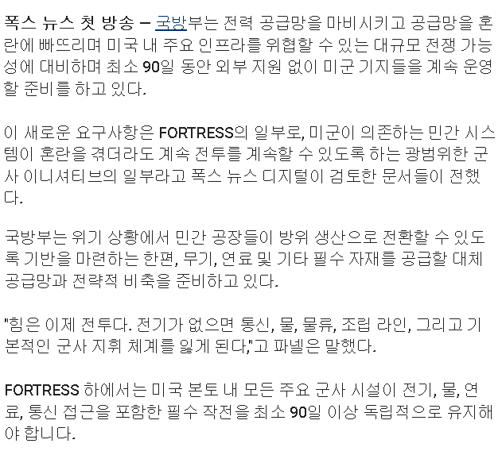

다른 곳도 아니고 미국 본토 기지 보급도 여의치 않을 정도라면,
이런 조치 자체가 언발에 오줌 누기가 아닌지.

다른 곳도 아니고 미국 본토 기지 보급도 여의치 않을 정도라면,
이런 조치 자체가 언발에 오줌 누기가 아닌지.
진짜 자연사 가능할까 우리
자연사 생각할 시간에 전장에 나가서 국가에 기여할 생각을 해야지 (다리잘려도 책임안짐)
우와 애국심이 막 끓어오른다!!!!
세계 경제가 어려울 때마다 전쟁으로 헤쳐나가긴 했지.. 우리가 그 소용돌이 중심에 있을거냐 옆에서 떡고물만 받아먹을거냐인데, 높은 확률로 중심일듯
새판을 짜는건 맞지
세부적인 대상들은 다를 수 있지만
리셋 타이밍이 왔나? 하는 생각은 자꾸만 듬...
civil war
본토공격을 가정한다는건가... 누가...? 본인들이?
헤그세스 같은 기열찐빠 새끼를 머가리로 앉혀놓으면 될 것도 안 될 것 같은데 ㅋㅋ 일단 좀 잘라라
내전?
내전대비군
내전이라도 하려고?
중간선거에서 공화당 조져지면 바로 내전 열 각 보는건가
포트리스 3 왜 망함??
아무래도 3차세계대전은 1차 2차때같이 정해진 전선에서 이뤄지는게 아니라
국토 내부에서의 사보타주, 경제봉쇄, 사이버전, 장거리 공습등으로 전선 개념이 넓어질수있어서 그런듯
당장 우크라이나만 봐도 러시아 상용트럭에 드론싣고 침투해서 군기지 작살내버렸잖아
하긴 옛날처럼 어느전선에 참호파고 니가밀리나 내가밀리나 하기만하는 전쟁은 아니긴하지
국방부 vs 캘리포니아, 텍사스 연합군의 대결 ㄷㄷㄷ
경상북도 대구 전라남도 목포 크로스! 느낌이군
이라는 컨셉으로 시빌워 라는 영화가 있음 ㅋㅋ
지구 망해가는 속도 보면
인구 리셋 한번 불가피하긴 함
걍 문명이 생긴 이래로 거의 최장기간이라보면 될 정도라는데
워 워네버 체인지
지금 트럼프가 미국 supply chain 박살내고 있는거 아님? ㅋㅋ
중간선거 조질거 같으니 전쟁위기 조장하면서 결집하는거면
쿠?
느낌이 세상이 슬슬 리셋을 원하는 느낌이야 미국은 새질서속에서 패권을 다른방식으로 가지고 싶어하고 유럽은 시스템적으로 진퇴양난에 빠졌고.
중국 결단만남은듯 대만을 먹고 패권에 도전하느냐 이대로 멈춰서 패권도전을 시진핑이 아니라 훗날 다른놈이 하게 냅두느냐